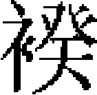
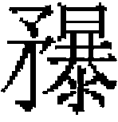
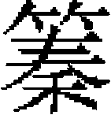
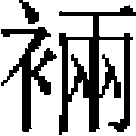
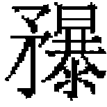
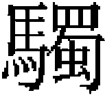

輿服志三
崇天鹵簿 外仗 儀衛
崇天鹵簿
中道頓遞隊：象六，飾以金裝蓮座，香寶鞍韂鞦轡罽勒，犛牛尾拂，跋塵，鉸具。導者六人，馭者南越軍六人，皆弓花角唐帽，緋絁銷金

衫，鍍金束帶，烏鞾，横列而前行。次駝鼓九，飾以鍍金鉸具，轡飾罽籠旗鼓纓槍。馭者九人，服同馭象者，中道相次而行。次舍人二人，四品服，騎分左右，夾駝而行。次青衣一人，武弁，青絁衫青勒帛，青鞾，執青杖。次清道官四人，本品服，騎。次信旛二人，執者二人，引護者四人，武弁，黄絁生色寶相花袍，黄勒帛，黄鞾。次騾鼓六，飾騾以鍍金鉸具，轡罽籠旗鼓纓槍。馭者六人，服同馭駝者。次告止旛二，執者二人，引護者四人，武弁，緋絁生色寶相花袍，紅勒帛，紅鞾。次傳教旛二，執者二人，引護者四人，武弁，黄絁生色寶相花袍，黄勒帛，黄鞾，並分左右。次橋道頓遞使一人，本品服，騎。中道，舍人、清道官、橋道頓遞使從者凡七人，錦帽，紫衫，小銀束帶，行縢鞋襪。後凡從者之服，皆同此。纛矟隊：金吾將軍二人，交角幞頭，緋羅繡抹額，紫羅繡辟邪裲襠，紅錦襯袍，錦螣蛇，金帶，烏鞾，横刀，佩符，騎，皆分左右。次弩而騎者五人，錦帽，青絁生色寶相花袍，銅帶，緑雲鞾。次矟而騎者五人，錦帽，緋絁生色寶相花袍，銅帶，朱雲鞾。次纛一，執者一人，夾者四人，護者二人，皆錦帽，紫生色寶相花袍，鍍金帶，紫雲鞾。押纛官二人，皆騎，本品服。次馬鼓四，飾如騾鼓，馭者四人，服同御騾。次佩弓矢而騎者五人，服同執弩者。押衙四人，騎而佩劍，錦帽，紫絁生色寶相花袍，鍍金帶，雲頭鞾。

矟者四人，騎，錦帽，緋絁生色寶相花袍，銅帶，朱鞾。控馬八人，錦帽，紫衫，銀帶，烏鞾。次矟而騎者五人，服佩同執弩者。金吾將軍、押纛官從者四人，服同前隊。朱雀隊：舍人一人，四品服，騎而前。次朱雀旗一，執者一人，引護者四人，錦帽，緋絁生色鳳花袍，銅帶，朱雲鞾皆佩劍而騎，護者加弓矢。次金吾折衝一人，交角幞頭，緋絁繡抹額，紫羅繡辟邪裲襠，紅錦襯袍，金帶，錦螣蛇，烏鞾，横刀，佩弓矢而騎，帥甲騎凡二十有五，弩五人，次弓五人，次矟五人，次弓五人，次矟五人，皆冠甲騎冠，朱畫甲，青勒甲絛，鍍金環，白繡汗胯，束帶，紅鞾，帶弓箭器仗。馬皆朱甲、具裝珂飾全。舍人、金吾折衝從者凡二人，服同前隊。
十二旗隊：舍人一人，四品服，騎而前。金吾果毅二人交角幞頭，緋羅繡抹額，紫羅繡辟邪裲襠，紅錦襯袍，金帶，錦螣蛇，烏鞾，横刀，佩弓矢，騎分左右。帥引旗騎士五，皆錦帽，黄生色寶相花袍，銀帶，烏鞾。次風伯旗左，雨師旗右，雷公旗左，電母旗右，執者四人，騎。青甲旗冠，緑甲，青勒甲絛，鍍金環，白繡汗胯，束帶，青雲鞾，馬皆青甲珂飾。次五星旗五，執者五人，甲騎冠，五色畫甲，青勒甲絛，鍍金環，白繡汗胯，束帶，五色鞾，馬甲如其甲之色，珂飾。次北斗旗一，執者一人，甲騎冠，紫畫甲，青勒甲絛，鍍金環，白繡汗胯，束帶，紫雲鞾，馬甲隨其甲之色，珂飾。左右攝提旗二，執者二人，甲騎冠，朱畫甲，青勒甲絛，鍍金環，白繡汗胯，束帶，紅雲鞾，馬朱甲，珂飾。執副竿者二人，騎，錦帽，黄生色寶相花袍，銀帶，烏鞾。執矟而護者五人，騎，服同執副竿者。舍人、金吾果毅從者凡三人，服同前隊。
門旗隊：舍人二人，四品服。監門將軍二人，皆交角幞頭，緋絁繡抹額，紫羅繡獅子裲襠，紅錦襯袍，金帶，烏鞾，横刀，佩弓矢，騎，馬甲、珂飾全。次門旗二，執者二人，錦帽，緋絁生色獅子文袍，銅革帶，紅雲鞾，劍而騎。引護者四人，服佩同執人，而加弓矢，騎。次監門校尉二人，騎，服佩同監門將軍，分左右行。次鸞旗一，執者一人，引護者四人，錦帽，五色絁生色瑞鸞花袍，束帶，五色雲鞾，佩劍，護人加弓矢，皆騎。舍人、監門將軍、監門校尉從者凡六人，服同前隊。
雲和樂：雲和署令二人，朝服，騎，分左右。引前行，凡十有六人，戲竹二，排簫四，簫管二，龍笛二，板二，歌工四，皆展角花幞頭，紫絁生色雲花袍，鍍金帶，紫鞾。次琵琶二十。笙十有六，箜篌十有六，

十有六，方響八，頭管二十有八，龍笛二十有八，已上工百三十有二人，皆花幞頭，緋絁生色雲花袍，鍍金帶，朱鞾。次杖鼓三十，工人花幞頭，黄生色花襖，紅生色花袍，錦臂韝，鍍金帶，烏鞾。次板八，工人服色同琵琶工人。次大鼓二，工十人，服色同杖鼓工人。雲和署令從者二人，服同前隊。殿中黄麾隊：舍人二人，四品服。殿中侍御史二人，本品服，皆騎。次黄麾一，執者一人，夾者二人，騎，武弁，緋絁生色寶相花袍，紅勒帛，紅雲鞾。舍人、殿中侍御史從者凡四人，服同前隊。
太史鉦鼓隊：太史一人，本品服，騎。引交龍掆鼓左，金鉦右，舁四人，工二人，皆武弁，緋絁生色寶相花袍，紅勒帛，紅鞾。次司辰郎一人，左，典事一人，右，並四品服，騎。太史、司辰郎、典事從者三人，服同前隊。
武衛鈒戟隊：武衛將軍一人，交角幞頭，緋羅繡抹額，紫羅繡瑞鷹裲襠，紅錦襯袍，錦螣蛇，金帶，横刀，騎。領五色繡旛一，金節八，右，罼左，朱雀、青龍、白虎幢三，横布導蓋一，中道又四。武衛果毅二人，服佩同武衛將軍。鈒二十，戟二十，徒五十有九人，武弁，緋絁生色寶相花袍，紅勒帛，紅鞾。武衛將軍、武衛果毅從者凡三人，服同前隊。
龍墀旗隊：舍人二人，四品服。中郎將二人，服佩同鈒戟隊武衛將軍，騎，分左右。帥騎士凡二十有四人，執旗者八人。天下太平旗，中道，中嶽帝旗左，中央神旗右。次日旗左，月旗右。次祥雲旗二，分左右。次皇帝萬歲旗，中道。執人皆黄絁巾，黄絁生色寶相花袍，黄勒帛，黄雲鞾，横刀。引者八人，青絁巾，青絁生色寶相花袍，青勒帛，青雲鞾，横刀，執弓矢。護者八人，緋絁巾，緋絁生色寶相花袍，紅勒帛，紅雲鞾，横刀，執弓矢。舍人、中郎將從者凡四人，服同前隊。
御馬隊：舍人二人，四品服。引左右衛將軍二人。緋羅繡抹額，紫羅繡瑞馬

襠，紅錦襯袍，錦螣蛇，金帶，烏鞾，横刀，皆騎，分左右行。御馬十有二疋，分左右，飾以纓轡鞍複。馭士控鶴二十有四人，交角金花幞頭，紅錦控鶴襖，金束帶， 鞋。次尚乘奉御二人，四品服，騎，分左右行。舍人、左右衛將軍從者四人，服同前隊。
鞋。次尚乘奉御二人，四品服，騎，分左右行。舍人、左右衛將軍從者四人，服同前隊。
拱衛控鶴第一隊：拱衛指揮使二人，本品服，騎，分左右。帥步士凡二百五十有二人，負劍者三十人，次執金吾杖者五十人，次執斧者五十人，次執鐙杖者六十人，次執列絲骨朵者三十人，皆分右右。次攜金水瓶者一人，左，金盆者一人，右。次執列絲骨朵者三十人，皆分左右，皆金鏤額交角幞頭。青質孫控鶴襖，塗金荔枝束帶，鞋。拱衛指揮使從者二人，服同前隊。
安和樂：安和署令二人，本品服，騎，分左右行。領押職二人，弓角鳳翅金花幞頭，紅質孫加襴袍。金束帶，花鞾。次扎鼓八，爲二重，次和鼓一，中道，次板二，次龍笛四，次頭管二，次羌笛二，次笙二，次二，左右行，次雲璈一，中道，工二十有四人，皆弓角鳳翅金花幞頭，紅錦質孫襖，金荔枝束帶，花鞾。從者二人，服同前隊。
金吾援寶隊：舍人二人，四品服。引金吾將軍二人，交角幞頭，緋羅繡抹額，紫羅繡辟邪裲襠，紅錦襯袍，錦螣蛇，横刀，佩弓矢，皆騎，分左右。前引駕十二重，甲士一十二騎，弩四，次弓四，次矟四，爲三重。次香案二，金爐、合各二，分左右，舁士十有六人，侍香二人，騎而從。次典瑞使二人，本品服，騎而左右引八寶。受命寶左，傳國寶右，次天子之寶左，皇帝之寶右，次天子行寶左，皇帝行寶右，次天子信寶左，皇帝信寶右。每輿寶盝，銷金蒙複，襯複，案輿紅銷金衣，龍頭竿，結綬，舁士八人，朱團扇四人，凡九十有六人，皆交角金花幞頭，青紅錦質孫襖，每輿前青後紅，金束帶，鞋。援寶三十人，交角金花幞頭，窄紫衫，銷金紅汗胯，金束帶，烏鞋，執金縷黑杖。次符寶郎二人，四品服，騎，分左右。次金吾果毅二人，服佩同金吾將軍，騎，分左右。次矟四人，次弓四人，次弩四人，爲三重。舍人、金吾將軍、侍香、典瑞使、符寶郎、金吾果毅從者凡十有二人，服同前隊。
殿中繖扇隊：舍人二人，四品服，騎，分左右。領騎而執旗者四人，日月合璧旗左，五星連珠旗右，次金龍旗左。金鳳旗右，黄絁巾，黄絁生色寶相花袍，黄勒帛，黄鞾，佩劍。騎而引旗者四人，青絁巾，青絁生色寶相花袍，青勒帛，青鞾，佩劍，執弓矢。騎而護旗者四人，紅絁巾，紅絁生色寶相花袍，紅勒帛，紅鞾，佩劍，執弓矢。次朱團扇十有六，次小雉扇八，次中雉扇八，次大雉扇八，爲十重，重四人。次曲蓋二，紅方繖二，次紫方繖二，次華蓋二，次大繖二，執者五十人，武弁，紅絁生色寶相花袍。紅勒帛，紅鞾。舍人從者二人，服同前隊。
控鶴圍子隊：圍子頭一人，執骨朵，由中道，交角幞頭，緋錦質孫襖，鍍金荔枝帶，鞋。領執圍子十有六人，分左右，交角金花幞頭，白襯肩，青錦質孫襖，鍍金荔枝帶，鞋。次朱繖，中道，次金脚踏左，金椅右。服如圍子頭。拱衛指揮使一人，本品服，騎，中道。控鶴二十人，服同上。拱衛指揮使從者二人，服同前隊。
天樂一部：天樂署令二人，本品服，騎，分左右。領押職二人，弓角鳳翅金花幞頭，紅錦質孫襖，加襴，金束帶，花鞾，次琵琶二，箜篌二，火不思二，板二，筝二，胡琴二，笙二，頭管二，龍笛一，響鐵一，工十有八人，徒二人，皆弓角鳳翅金花幞頭，紅錦質孫襖，鍍金束帶，花鞾。
控鶴第二隊：僉拱衛司事二人，本品服，騎，分左右。帥步士凡七十有四人，執立瓜者三十有六人，分左右，次捧金杌一人左，鞭桶一人右，次蒙鞍一人左，繖手一人右。次執立瓜者三十有四人，分左右，皆交角金花幞頭，緋錦質孫襖，鍍金荔枝帶，鞋。僉拱衛司事從者二人，服同前隊。
殿中導從隊：舍人二人，四品服，騎，左右。引香鐙案一，黄銷金盤龍衣，金爐合，結綬，龍頭竿，舁者十有二人，交角金花幞頭，紅錦質孫控鶴襖，鍍金束帶，鞋。侍香二人，騎，分左右。次警蹕三人，交角幞頭，紫窄袖衫，鍍金束帶，烏鞾。次舍人二人，四品服，騎。引天武官二人，執金鉞，金鳳翅兜弁，金鎖甲，青勒甲絛，金環繡汗胯，金束帶，馬珂飾。次金骨朵二，次幢二，次節二，分左右。次金水盆左，金椅右，次蒙複左，副執椅右，次金水瓶、鹿盧左，銷金净巾右。次金香毬二，金香合二，分左右。次金唾壺左，金唾盂右。金拂四，扇十，分左右。次黄繖，中道，繖衣從。凡騎士三十人，服如警胯，加白繡汗胯。步卒四人，執椅二人，蒙複一人，繖衣一人。服如舁香鐙徒。舍人、天武官從者六人，服同前隊。
控鶴第三隊：拱衛直鈴轄二人，本品服，騎。引執卧瓜八十人，服如第二隊。
導駕官：引進使二人，分左右前行。次給事中一人左，起居注一人右，侍御史一人左，殿中侍御史一人右，次翰林學士二人左，集賢學士一人右，次御史中丞一人左，同知樞密院事一人右，次御史大夫一人左，知樞密院事一人右。次侍儀使四人，中書侍郎二人，黄門侍郎二人，侍中二人，皆分左右。次儀仗使一人左，鹵簿使一人右。次禮儀使二人，分左右。持劈正斧一人，中道。次大禮使一人左，太尉一人右。皆本品服，騎。從者三十人，惟執劈正斧官從者二人，服同前隊。
羽林宿衛：舍人二人，四品服，前行。次羽林將軍二人，交角幞頭，緋羅繡抹額，紫羅繡瑞鷹裲襠，紅錦襯袍，錦螣蛇，金帶，烏鞾，横刀，佩弓矢，皆騎，分左右。領宿衛騎士二十人，執骨朵六人，次執短戟六人，次執斧八人，皆弓角金鳳翅幞頭，紫袖細褶辮線襖，束帶，烏鞾，横刀。舍人、羽林將軍從者凡四人，服同前隊。
檢校官：分布中道之外，外仗之内。頓遞隊，監察御史二人，本品服。次纛矟隊，循仗檢校官二人。次朱雀隊，金吾中郎將二人，皆交角幞頭，緋羅繡抹額，紫羅繡辟邪襠，紅錦襯袍，錦螣蛇，金帶，烏鞾，佩儀刀，加弓矢。次十二旗隊，兵部侍郎二人，本品服。次門旗隊，糾察儀仗官二人，本品服。次雲和樂部，金吾將軍二人，服佩如金吾中郎將。知隊仗官二人，本品服。次武衛鈒戟隊，監察御史二人，本品服。次外道左右牙門巡仗，監門中郎將二人，交角幞頭，緋羅繡抹額，紫羅繡獅子裲襠，紅錦襯袍，錦螣蛇，金帶，烏鞾，佩儀刀，弓矢。次金吾援寶隊，兵部尚書二人，次循仗檢校官二人。次殿中繖扇隊，監察御史二人，次禮部尚書二人，皆本品服。次圍子隊，知隊仗官二人。次金吾大將軍二人，服同金吾將軍，各

矟從。次殿中導從，糾察隊儀仗官二人。次循仗檢校官二人。次羽林宿衛隊，左點檢一人左，右點檢一人右，紫羅繡瑞麟裲襠，餘同金吾大將軍。領大黄龍負圖旗二，執者二人，夾者八人。騎，錦帽，五色絁巾，五色絁生色雲龍袍，塗金束帶，五色雲鞾，佩劍，夾者加弓矢，並行中道。控鶴外，外仗内。前後檢校，仗内知班六人，展角幞頭，紫窄衫，塗金束帶，烏鞾。丞奉班都知一人，太常博士一人，皆朝服，騎，門檢校官。前後巡察宿直將軍八人，服佩同左右點檢，夾輅檢校三衛。陪輅隊：誕馬二疋，珂飾，纓轡，青屜。乘黄令二人，本品服，分左右。次殿前將軍二人，交角幞頭，緋羅繡抹額，紫羅繡辟邪裲襠，紅錦襯袍，錦螣蛇，金帶，烏鞾，横刀，騎。玉輅，太僕卿馭，本品服。千牛大將軍驂乘，交角幞頭，紅抹額，繡瑞牛裲襠，紅錦襯袍，錦螣蛇，金帶，烏鞾，横刀。左右衛將軍，服如千牛大將軍，惟裲襠繡瑞虎文。陪輅輅馬六匹，珂飾，纓轡，青屜，牽套鞶帶。步卒凡八十有二人，馭士四人，駕士六十有四人，行馬二人，踏道八人，推竿二人，托叉一人，梯一人，皆平巾，青幘，青繡雲龍花袍，塗金束帶，青鞾。教馬官二人，進輅職長二人，皆本品服。夾輅將軍二人，金鳳翅兜牟，金鎖甲，絛環，繡汗胯，金束帶，緑雲花鞾。青瀝水扇二。次千牛備身二人，皆分左右，交角幞頭，緋羅繡抹額，紫羅繡瑞牛裲襠，紅錦襯袍，金帶，烏鞾，横刀，佩弓矢。獻官二人，殿中監六人，内侍十人，皆本品朝服，騎，分左右。千牛備身後，騎而執弓矢者十人，尚衣奉御四人，尚食奉御二人，尚藥奉御二人，皆騎，本品服。次腰輿，黄 絲銷金雲龍蒙複，步卒凡十有三人，舁八人，道扇四人，黄繖一人，皆交角金花幞頭，紅質孫控鶴襖，金束帶，鞋。尚舍奉御二人，騎左，尚輦奉御二人，騎右，皆朝服。從者三十有四人，服同前隊。
絲銷金雲龍蒙複，步卒凡十有三人，舁八人，道扇四人，黄繖一人，皆交角金花幞頭，紅質孫控鶴襖，金束帶，鞋。尚舍奉御二人，騎左，尚輦奉御二人，騎右，皆朝服。從者三十有四人，服同前隊。
大神牙門旗隊：都點檢一人，騎，交角幞頭，緋羅繡抹額。紫羅繡瑞麟裲襠，紅錦襯袍。次監門大將軍二人，分左右，騎，服如都點檢，惟裲襠紫繡獅文。門凡三重。親衛郎將帥甲士，分左右，夾輅而陣，繞出輅後，合執氅者二，爲第一門。翊衛郎將帥護尉，夾親衛而陣，繞出輅後，合爲第二門。監門校尉二人，騎。左右衛大將軍帥甲士，執五色龍鳳旗，夾護尉而陣，繞出輅後，合牙門旗二，爲第三門，監門校尉二人主之。服色詳見外仗。
雲和樂後部：雲和署丞二人，本品服，騎，分左右。領前行，戲竹二，排簫二，簫管二，歌工二，凡十人，皆騎，花幞頭，紫絁生色花袍，塗金帶，烏鞾。次琵琶四，筝四，箜篌四，四，頭管六，方響二，龍笛六，杖鼓十，工四十人，皆騎，服同上，惟絁色紅。從者二人，服同前隊。
後黄麾隊：玄武幢一，絳麾二，徒三人，皆武弁，紫絁生色龜雲花袍，紫羅勒帛，紫鞾。次黄麾，執者一人，夾者二人，皆騎。豹尾一，執者一人，夾者二人，皆騎，武弁，紫生色寶相花袍，紫勒帛，紫鞾。
玄武黑甲掩後隊：金吾將軍一人，騎，中道，交角幞頭，緋羅繡抹額，紫羅繡辟邪裲襠，紅錦襯袍，金帶，錦螣蛇，烏鞾，佩刀。後衛指揮使二人，騎，分左右，服同各衛指揮使，帥甲騎五十有七人。玄武旗一，執者一人，夾者二人。小金龍鳳黑旗二，執者二人，皆黑兜牟［一］，金飾，黑甲絛環，汗胯，束帶，鞾。帶弓矢器仗，馬黑金色獅子甲，珂飾。矟四十人，弩十人，黑兜牟，黑甲絛環，汗胯，束帶，鞾，帶弓矢器仗。馬黑甲，珂飾。執衛司矟二人，錦帽，紫生色辟邪文袍，鍍金帶，烏鞾。從者三人，服同前隊。
外仗
金鼓隊：金鼓旗二，執者二人，引護者八人，皆五色絁巾，生色寶相花五色袍，五色勒帛，鞾，佩劍，引護者加弓矢，分左右。次折衝都尉二人，交角幞頭，緋羅繡抹額，紫羅繡辟邪裲襠，紅錦襯袍，金帶，錦螣蛇，騎。帥步士凡百二十人，鼓二十四人，鉦二十四人，並黄絁巾，黄絁生色寶相花袍，黄勒帛，黄鞾。角二十四人，紅絁巾，紅絁生色寶相花袍，紅勒帛，紅鞾。車輻棒二十四人，長刀二十四人，並金飾青兜牟，青甲絛環，白繡汗胯，束帶，青雲鞾。
清游隊：舍人二人，四品服，騎導。金吾折衝二人，交角幞頭，緋羅繡抹額，紫羅繡辟邪裲襠，紅錦襯袍，金帶，錦螣蛇，横刀。佩弓矢，騎，分左右，帥步士百有十人。白澤旗二，執者二人，引護者八人。次執弩二十人，次執矟二十人，次執弓二十人，次執矟二十人，次弩執弓二十人，皆甲騎冠，金飾，緑畫甲絛環，白繡汗胯，束帶，緑雲鞾，佩弓矢器仗，馬金飾朱畫甲，珂飾，分左右。
佽飛隊：鐵甲佽飛，執矟者十有二人，甲騎冠，鐵甲，佩弓矢，器仗，馬鐵甲。珂飾。次金吾果毅二人，交角幞頭，緋絁繡抹額，紫羅繡辟邪裲襠，紅錦襯袍，金帶，錦螣蛇，横刀，弓矢，騎。次虞候佽飛，執弩二十人，錦帽，紅生色寶相花袍，塗金帶，烏鞾。
殳仗隊：領軍將軍二人，交角幞頭，緋絁繡抹額，紫羅繡白澤裲襠，紅錦襯袍，金帶，錦螣蛇，烏鞾，横刀，騎。帥步士十五人，執殳二十五人，執叉二十五人，錯分左右，皆五色絁生色巾，寶相花五色袍，五色勒帛，五色雲頭鞾。領軍將軍從者二人，錦帽，紫衫，小銀束帶，行螣，鞋韈。
諸衛馬前隊：舍人二人，四品服，騎導。左右衛郎將二人，交角幞頭，緋絁繡抹額，紫羅繡瑞馬襠，紅錦襯袍，金帶，錦螣蛇，烏鞾，横刀，佩弓矢，騎，分左右，帥騎士百五十有六人。前辟邪旗左，應龍旗右，次玉馬旗左，三角旗右，次黄龍負圖旗左，黄鹿旗右，次飛麟旗左，駃騠旗右，次鸞旗左，鳳旗右，次飛黄旗左，麒麟旗右。執旗十有二人，生色黄袍，巾，勒帛，鞾。引旗十有二人，服同執人，惟袍色青。護旗十有二人，生色紅袍，巾，勒帛，鞾。執弓六十人，錦帽，青生色寶相花袍，塗金帶，烏鞾。執矟六十人，服如執弓者，惟袍色紅。每旗，弓五，矟五。從者四人，服同前隊。
二十八宿前隊：舍人二人，四品服，騎導。領軍將軍二人，紫羅繡白澤裲襠，餘如前隊。左右衛郎將皆騎，帥步士百十有二人。前井宿旗左，參宿旗右，各五盾從。次鬼宿旗左，觜宿旗右，各五弓從。次柳宿旗左，畢宿旗右，各五盾從。次星宿旗左，昴宿旗右，各五盾從。次張宿旗左，胃宿旗右，各五弓從。次翼宿旗左，婁宿旗右，各五從。次軫宿旗左，奎宿旗右，各五盾從。執旗十有四人，生色黄袍，巾，勒帛，鞾。引旗十有四人，服如執人，惟袍巾色青。護旗十有四人，服如執人，惟袍巾色紅。執刀盾者三十人，弓矢者二十人， 者二十人，皆五色兜牟，甲，絛環，白繡汗胯，束帶，五色雲鞾。舍人、領軍將軍從者四人，服同前隊。
者二十人，皆五色兜牟，甲，絛環，白繡汗胯，束帶，五色雲鞾。舍人、領軍將軍從者四人，服同前隊。
領軍黄麾仗前隊：舍人二人，四品服，騎導。領軍將軍二人，服佩如二十八宿旗隊領軍將軍，騎，分左右，帥步士凡一百五十人，絳引旛十，次龍頭竿繡氅十，皆分左右。次江瀆旗左，濟瀆旗右。次小戟十，次弓十，皆分左右。次南方神旗左，西方神旗右。次鍠十，次緑縢絡盾加刀十，皆分左右。次南岳帝旗左，西岳帝旗右。次龍頭竿氅十，次朱縢絡盾刀十，皆分左右。次南天王旗左，西天王旗右。次小戟十，次弓十，皆分左右。次龍君旗左，虎君旗右。次鍠十，次緑縢絡盾刀十，皆分左右。凡執人一百三十人，武弁，五色生色寶相花袍，勒帛，鞾。引旗十人，青生色寶相花袍巾，勒帛，鞾。護旗十人，服同，惟袍巾色紅。
殳仗後隊：領軍將軍二人［二］，騎，帥步士凡五十人。殳二十有五，叉二十有五，錯分左右。服佩同前隊。
左右牙門旗隊：監門將軍二人，騎，紫繡獅子裲襠，餘如殳仗隊領軍將軍之服佩。次牙門旗四，每旗執者一人，引夾者二人，並黄絁巾，黄絁生色寶相花袍，黄勒帛，黄雲鞾，皆騎。次監門校尉二人，騎，服佩同監門將軍。從者四人，服同前隊。
左右青龍白虎隊：舍人二人，四品服，騎導。領軍將軍二人［三］，服佩同殳仗隊之領軍將軍，騎，分左右，帥甲士凡五十有六人，騎。青龍旗左，執者一人，夾者二人，從以執弩五人，弓十人，矟十人，皆冠青甲騎冠，青鐵甲，青絛金環，束帶，白繡汗胯，青雲鞾。白虎旗右，執者一人。夾者二人，從以執弩五人，弓十人，矟十人，皆冠白甲騎冠，白鉄甲，青絛金環，束帶，白繡汗胯，白雲鞾。舍人、領軍將軍從者四人，服同前隊。
二十八宿後隊：舍人二人，四品服，騎導。領軍將軍二人，騎，分左右，帥步士百十有二人。角宿旗左，壁宿旗右［四］，從以執弓者五人。次亢宿旗左，室宿旗右，各從以執者五人。次氐宿旗左，危宿旗右，各從以執盾者五人。次房宿旗左，虚宿旗右，各從以執弓者五人。次心宿旗左，女宿旗右，各從以執者五人。次尾宿旗左，牛宿旗右，各從以執盾者五人。次旗宿旗左，斗宿旗右，各從以執弓者五人。舍人、領軍將軍從者四人，執夾、引從服佩，皆同前隊。
諸衛馬後隊：舍人二人，四品服，騎導。左右衛果毅都尉二人，騎，分左右。帥衛士百五十有六人。角端旗左，赤熊旗右，次兕旗左，太平旗右，次騼

旗左，騶牙旗右，次犀牛旗左，鵕旗右，次蒼烏旗左，白狼旗右，次龍馬旗左，金牛旗右。舍人、左右衛果毅都尉從者四人，執夾、引從服佩，同前隊。左右領軍黄麾後隊：舍人二人，四品服，騎導。領軍將軍二人，騎，皆分左右，帥步士百六十人。龍頭氅十，次朱縢絡盾加刀十，皆分左右。次吏兵旗左，力士旗右。次小戟十，次弓十，皆分左右。次東天王旗左，北天王旗右。次鍠十，次緑縢絡盾加刀十，皆分左右。次東岳帝旗左，北岳帝旗右。次龍頭竿氅十，次朱縢絡盾加刀十，皆分左右。次東方神旗左，北方神旗右。次小戟十，次弓十，皆分左右。淮瀆旗左，河瀆旗右，次鍠十，次緑縢絡盾加刀十，皆分左右。次絳引旛十，分左右，掩後。舍人、領軍將軍從者四人，執夾服佩，並同前隊。
左右衛儀刀班劍隊：舍人二人，四品服，騎導。左右衛中郎將二人，交角幞頭，緋羅繡抹額，紫羅繡瑞馬襠，紅錦襯袍，錦螣蛇，金帶，烏鞾，騎，分左右，帥步士凡四十八。班劍二十人，儀刀二十人，並錦帽，紅生色寶相花袍，塗金束帶，烏鞾。舍人、左右衛中郎將從者四人，服同前隊。
供奉宿衛步士隊：供奉中郎將二，交角幞頭，緋絁繡抹額，紫羅繡瑞馬襠，紅錦襯袍，錦螣蛇，金帶，烏鞾，横刀，佩弓矢，騎，分左右，帥步士凡五十有二人。執短戟十有二人，次執列絲十有二人，次叉戟十有二人，次斧十有六人，分左右，夾玉輅行。皆弓角金鳳翅幞頭，紫細摺辮線襖，塗金束帶，烏鞾。
親衛步士隊：親衛郎將二人，服同供奉中郎將。騎，皆分左右，帥步士凡百四十有八人。執龍頭竿氅四人，次小戟十人，次氅二人，次儀鍠十人，次氅二人，次小戟十人，次氅二人，次儀鍠十人，次氅二人，次小戟十人，次氅二人，次儀鍠十人，次氅二人，次小戟十人，次氅二人，次儀鍠十人，次氅二人，次小戟十人，皆分左右。夾供奉宿衛隊。次氅二人，次儀鍠十人，次氅二人，次小戟十人，次氅二人，次儀鍠十人，次氅二人，折繞宿衛隊後，而合其端爲第一門。士皆金兜牟，甲，青勒甲絛，金環，緑雲鞾。
翊衛護尉隊：翊衛郎將二人，服同親衛郎將，騎。帥護尉騎士百有二人，皆交角金花幞頭，窄袖紫衫，紅銷金汗胯，塗金束帶，烏鞾。執金裝骨朵，分左右，夾親衛隊行，折繞隊後，而合其端爲第二門。
左右衛甲騎隊：左右衛大將軍二人，服如翊衛郎將，帥騎士百人。執青龍旗五人左，青鳳旂五人右。次青龍旗五人左，赤鳳旗五人右。次黄龍旗五人左，黄鳳旂五人右。次白龍旗五人左，白鳳旗五人右。次黑龍旗五人左，黑鳳旗五人右。次五色鳳旗二十五居左，五色龍旗二十五居右，曲繞輅後，合牙門旗爲第三門，士皆冠甲，騎，冠金飾，朱畫甲，青勒甲絛，鍍金環，白繡汗胯，紅鞾，佩弓矢器仗，馬青金毛獅子甲，珂飾。
左衛青甲隊：左衛指揮使二人，騎，服紫羅繡雕虎裲襠，餘同左右衛大將軍，帥騎士三十有八人。執大青龍旗一人左，大青鳳旗一人右，次小青龍旗一人左，小青鳳旗一人右，次大青鳳旗一人左，大青龍旗一人右，每旗從以持青矟者四人。次小青鳳旗一人左，小青龍旗一人右，皆從以持青矟者三人。皆青兜牟，金飾青畫甲，青絛，塗金環，汗胯，束帶，鞾，佩弓矢器仗，馬青金毛獅子甲，珂飾。折繞陪門。
前衛赤甲隊：前衛指揮使二人，騎，服佩同前衛指揮使，帥騎士凡四十有八人。執大赤鳳旗一人左，大赤龍旗一人右，次小赤鳳旗一人左，小赤龍旗一人右，次大赤龍旗一人左，大赤鳳旗一人右，次小赤龍旗一人左，小赤鳳旗一人右，每旗從以持朱矟者四人。次執大赤鳳旗一人左，大赤龍旗一人右，皆從以持朱矟者三人。皆朱兜牟，金飾朱畫甲，絛環，汗胯，束帶，鞾，佩弓矢器仗，馬朱甲，珂飾。從者二人，服同前隊。折繞陪門。
中衛黄甲隊：中衛指揮使二人，騎，服同前衛指揮使，帥騎士凡五十有八人。執大黄龍旗一人左，大黄鳳旗一人右，次小黄龍旗一人左，小黄鳳旗一人右，次大黄鳳旗一人左，大黄龍旗一人右，次小黄鳳旗一人左，小黄龍旗一人右，次大黄龍旗一人左，大黄鳳旗一人右，每旗從以持黄矟者四人。次小黄龍旗一人左。小黄鳳旗一人右，皆從以持黄矟者三人。皆黄兜牟，金飾黄甲，絛環，汗胯，束帶，靴，佩弓矢器仗，馬黄甲，珂飾。從者二人，服同前隊。折繞陪門。
右衛白甲隊：右衛指揮使二人，騎，服同中衛指揮使，帥騎士凡七十有四人。執大白鳳旗一人左，大白龍旗一人右，次小白鳳旗一人左，小白龍旗一人右，次大白龍旗一人左，大白鳳旗一人右，次小白龍旗一人左，小白鳳旗一人右，次大白鳳旗一人左，大白龍旗一人右，每旗從以持白矟者四人。次小白鳳旗一人左，小白龍旗一人右，次大白龍旗一人左，大白鳳旗一人右，皆從以持白矟者五人。皆白兜牟，金飾白甲，絛環，汗胯，束帶，鞾，佩弓矢器仗，馬白甲，珂飾。從者二人，服同前隊。折繞陪門。
牙門四：監門中郎將二人，服佩同各衛指揮使，騎，分左右。次左衛，次前衛。次中衛，次右衛。牙門旂各二，色並赤。監門校尉各二人，騎，服佩同各衛之執旗者。從者十人，服同隊。
儀衛
殿上執事
挈壺郎二人，常直漏刻。冠學士帽，服紫羅窄袖衫，塗金束帶，烏鞾。漏刻直御榻南。
司香二人，掌侍香，以主服御者國語曰速古兒赤。攝之。冠服同挈壺。香案二，在漏刻東西稍南。司香侍案側，東西相向立。
酒人，凡六十人：主酒國語曰答剌赤。二十人，主湩國語曰哈剌赤。二十人，主膳國語曰博兒赤。二十人。冠唐帽，服同司香。酒海直漏南，酒人北面立酒海南。
護尉四十人，以質子在宿衛者攝之。質子，國語曰覩魯花。冠交角幞頭，紫梅花羅窄袖衫，塗金束帶，白錦汗胯，帶弓矢，佩刀，執骨朵，分立東西宇下。
警蹕三人，以控鶴衛士爲之。冠交角幞頭，服紫羅窄袖衫，塗金束帶，烏靴，捧立于露階。每乘出入，則鳴其鞭以警衆。
殿下執事
司香二人，亦以主服御者攝之，冠服同殿上司香。香案直露階南，司香東西相向立。
護尉，凡四十人，以户郎國語曰玉典赤。二十人、質子二十人攝之。服同宇下護尉，夾立階戺。
右階之下，伍長凡六人，都點檢一人，右點檢一人，左點檢一人。凡宿衛之人及諸門者、户者皆屬焉。如怯薛歹、八剌哈赤、玉典赤之類是也。殿内將軍一人，凡殿内佩弓矢者、佩刀者、諸司禦者皆屬焉。如火兒赤、温都赤之類是也。殿外將軍一人，宇下護尉屬焉。宿直將軍一人，黄麾立仗及殿下護尉屬焉。右無常官，凡朝會，則以近侍重臣攝之。服白帽，白衲襖，行縢，履襪，或服其品之公服，恭事則侍立。舍人授以骨朵而易笏，都點檢以玉，右點檢以瑪瑙，左點檢以水精，殿内將軍以瑪瑙，殿外將軍以水精，宿直將軍以金。
左階之下，伍長凡三人，殿内將軍一人，殿外將軍一人，宿直將軍一人，冠服同右，恭事則侍立。舍人授以骨朵而易笏，殿内將軍以瑪瑙，殿外將軍以水精，宿直將軍以金。
司辰郎二人，一人立左樓上，服視六品，候時，北面而雞唱；一人立樓下，服視八品，候時，捧牙牌趨丹墀跪報。露階之下，左黄麾仗内，設表案一，禮物案一，輿士凡八人，每案四人。前二人冠縷金額交角幞頭，緋錦寶相花窄袖襖，塗金束帶，行縢，鞋襪。後二人冠服同前，惟襖色青。
圉人十人，國語曰阿塔赤。冠唐巾，紫羅窄袖衫，青錦緣白錦汗胯，銅束帶，烏鞾，馭立仗馬十，覆以青錦緣緋錦鞍復，分左右，立黄麾仗南。
侍儀使二人，引進使一人，通班舍人一人，尚引舍人一人，閲仗舍人一人，奉引舍人一人，先輿舍人一人。糾儀官凡四人，尚書一人，侍郎一人，監察御史二人。知班三人，視班内失儀者，白糾儀官而行罰焉。皆東向，立右仗之東，以北爲上。
侍儀使二人，引進使一人，承奉班都知一人，宣表目舍人一人，宣表修撰一人，宣禮物舍人一人，奉表舍人一人，奉幣舍人一人，尚引舍人一人，閲仗舍人一人，奉引舍人一人，先輿舍人一人。押禮物官凡二人：工部侍郎一人，禮部侍郎一人。糾儀官凡四人：尚書一人，侍郎一人，監察御史二人。知班三人，視班内如左右輦路。宣輦舍人一人，通贊舍人一人，户郎二人，承傳贊席前，皆西向，立左仗之西，以北爲上。凡侍儀使、引進使、尚書、侍郎、御史，各服其本品之服。承奉班都知、舍人，借四品服。知班，冠展角幞頭，服紫羅窄袖衫，塗金束帶，烏鞾。
護尉三十人，以質子在宿衛者攝之，立大明門闑外，冠服同宇下護尉。
承傳二人，控鶴衛士爲之，立大明門楹間，以承傳于外仗。冠服同警蹕，執金柄小骨朵。
殿下黄麾仗黄麾仗凡四百四十有八人，分布於丹墀左右，各五行。
右前列，執大蓋二人，執華蓋二人，執紫方蓋二人，執紅方蓋二人，執曲蓋二人，冠展角幞頭，服緋絁生色寶相花袍，勒帛，烏鞾。
次二列，執朱團扇八人，執大雉扇八人，執中雉扇八人。執小雉扇八人，執朱團扇八人，冠武弁，服同前執蓋者。
次三列，執黄麾幡十人，武弁，青絁生色寶相花袍，青勒帛，烏鞾。執絳引旛十人，武弁，緋絶生色寶相花袍，緋勒帛，烏鞾。執信旛十人，冠服同上，其色黄。執傳教旛十人，冠服同上，其色白。執告止旛十人，冠服同上，其色紫。
次四列以下，執葆蓋四十人，武弁，服緋絁生色寶相花袍，青勒帛，烏鞾。執鍠斧四十人，冠服同上，其色黄。執小戟蛟龍掌四十人，冠服同上，其色青。左列亦如之。皆以北爲上。押仗四人，行視仗内而檢校之。冠服同警蹕者。
殿下旗仗旗仗執護引屏，凡五百二十有八人，分左右以列。
左前列，建天下太平旗第一，牙門旗第二，每旗執者一人，護者四人，皆五色緋巾，五色絁生色寶相花袍，勒帛，雲頭鞾，執人佩劒，護人加弓矢。後屏五人，執矟，朱兜鍪，朱甲，雲頭鞾。
左二列，日旗第三，龍君旗第四，每旗執者一人，護者四人，後屏五人，巾服執佩同前列。
右前列，建皇帝萬歲旗第一，牙門旗第二，每旗執者一人，護者四人，後屏五人，巾服執佩同前列。
右二列，月旗第三，虎君旗第四，每旗執者一人，護者四人，後屏五人，巾服執佩同前列。
左次三列，青龍旗第五，執者一人，黄絁巾，黄絁生色寶相花袍，勒帛，花鞾，佩劍；護者二人，朱白二色絁巾，二色絁生色寶相花袍，勒帛，花鞾，佩劍，加弓矢。天王旗第六，執者一人，巾服同上；護者二人，青白二色絁巾，二色生色寶相花袍，勒帛，花鞾，佩劍，加弓矢；後屏五人，執矟，朱兜鍪，朱甲，雲頭鞾。風伯旗第七，執者一人，護者二人，後屏五人，巾服佩執同天王旗。雨師旗第八，執者一人，護者二人，後屏五人，巾服佩執同青龍旗。雷公旗第九，執者一人，巾服佩同上；護者二人，青紫二色絁巾，二色絁生色寶相花袍，勒帛，花鞾，佩劍，加弓矢；後屏五人，執矟［五］，白兜鍪，白甲，雲頭鞾。電母旗第十，執者一人，護者二人，後屏五人，巾服執佩同風伯旗。吏兵旗第十一，執者一人，護者二人，巾服佩同雷公旗；後屏五人，執矟，黄兜鍪，黄甲，雲頭鞾。
右次三列，白虎旗第五，執者一人，黄絁巾，黄絁生色寶相花袍，勒帛，花鞾，佩劍；護者二人，青朱二色絁巾。二色絁生色寶相花袍，勒帛，花鞾，佩劍，加弓矢；後屏五人，執矟，朱兜鍪，朱甲，雲頭靴。江瀆旗第七，執者一人，護者一人，後屏五人，巾服執佩同天王旗。河瀆旗第八，執者一人，巾服佩同上；護者二人，青紫二色絁巾，二色絁生色寶相花袍，勒帛，花鞾，佩劍，加弓矢；後屏五人，執矟，黄兜鍪，黄甲，雲頭鞾。淮瀆旗第九，執者一人，巾服佩同上；護者二人，青朱二色絁巾，二色絁生色寶相花袍，勒帛，花鞾，佩劍，加弓矢；後屏五人，巾服執佩同白虎旗。濟瀆旗第十，執者一人，巾服佩同上；護者二人，朱白二色絁巾，二色絁生色寶相花袍，勒帛，花鞾，佩劍，加弓矢；後屏五人，執矟，青兜鍪，青甲，雲頭鞾。力士旗第十一，執者一人，護者二人，後屏五人，巾服佩執同河瀆旗。二十二旗内，拱衛直指揮使二人，分左右立，服本品朝服，執玉斧。次卧瓜一列，次立瓜一列，次列絲一列，冠縷金額交角幞頭，緋錦寶相花窄袖襖，塗金荔枝束帶，行縢，履韈。次鐙仗一列，次吾仗一列，次班劒一列，並分左右立，冠縷金額交角幞頭，青錦寶相花窄袖襖，塗金荔枝束帶，行縢，履韈。
左次四列，朱雀旗第十二，執者一人，黄絁巾，黄絁生色寶相花袍，勒帛，花鞾，佩劍，護者二人，青白二色絁巾，二色絁生色寶相花袍，勒帛，花鞾，佩劍，加弓矢；後屏五人，執矟，朱兜鍪，朱甲，雲頭鞾。木星旗第十三，執者一人，巾服佩同上；護者二人，青朱二色絁巾，二色絁生色寶相花袍，勒帛，花鞾，佩劍，加弓矢；後屏五人，執矟，青兜鍪，青甲，雲頭靴。熒惑旗第十四，執者一人。巾服佩同上；護者二人，青紫二色絁巾，二色絁生色寶相花袍，勒帛，花鞾，佩劍，加弓矢；後屏五人，巾服執同。土星旗第十五，執者一人，護者二人，巾服佩同熒惑旗；後屏五人，執矟，黄兜鍪，黄甲，雲頭鞾。太白旗第十六，執者一人，護者二人，巾服佩同木星旗；後屏五人，執矟，白兜鍪，白甲，雲頭鞾。水星旗第十七，執者一人，護者二人，巾服佩同太白旗；後屏五人，執矟，紫兜鍪，紫甲，雲頭鞾。鸞旗第十八，執者一人，巾服佩同上；護者二人，朱白二色絁巾［六］，二色絁生色寶相花袍，勒帛，花鞾，佩劍，加弓矢；後屏五人，巾服執同木星旗。
右次四列，玄武旗第十二，執者一人，黄絁巾，黄絁生色寶相花袍，勒帛，花鞾，佩劍；護者二人，朱白二色絁巾，二色絁生色寶相花袍，勒帛，花鞾，佩劍，加弓矢；後屏五人，紫兜鍪，紫甲，雲頭鞾，執矟。東嶽旗第十三，執者一人，護者二人，巾服佩同玄武旗；後屏五人，執矟，青兜鍪，青甲，雲頭鞾。
南嶽旗第十四，執者一人，巾服佩同上，護者二人，青甲二色絁巾，二色絁生色寶相花袍，勒帛，花鞾，佩劍，加弓矢；後屏五人，執矟，朱兜鍪，朱甲。中嶽旗第十五，執者一人，巾服佩同上；護者二人，紫青二色絁巾，二色絁生色寶相花袍，勒帛，花鞾，佩劍，加弓矢；後屏五人，執矟，黄兜鍪，黄甲，雲頭鞾。西嶽旗第十六，執者一人，巾服佩同上，護者二人，朱青二色絁巾，二色絁生色寶相花袍，勒帛，花鞾，佩劍，加弓矢；後屏五人，執矟。白兜鍪，白甲。北嶽旗第十七，執者一人，護者二人，巾服佩同南嶽旗；後屏五人，巾服執同玄武旗。麟旗第十八，執者一人，護者二人，後屏五人，巾服執佩同西嶽旗。
左次五列，角宿旗第十九，亢宿旗第二十，氐宿旗第二十一，房宿旗第二十二，心宿旗第二十三，尾宿旗第二十四，箕宿旗第二十五。每旗，執者一人，黄絁巾，黄絁生色寶相花袍，勒帛，花鞾，佩劍；護者二人，青朱二色絁巾，二色絁生色寶相花袍，勒帛，花鞾，佩劍，加弓矢；後屏五人，青兜鍪，青甲，執矟。
右次五列，奎宿旗第十九，婁宿旗第二十，胃宿旗第二十一，昴宿旗第二十二，畢宿旗第二十三，觜宿旗第二十四，參宿旗第二十五。每旗，執者一人，黄絁巾，黄絁生色寶相花袍，勒帛，花鞾，佩劍；護者一人，青朱二色絁巾，二色絁生色寶相花袍，勒帛，花鞾，佩劍，加弓矢；後屏五人，執矟，白兜鍪，白甲。
左次六列，斗宿旗第二十六，牛宿旗第二十七，女宿旗第二十八，虚宿旗第二十九，危宿旗第三十，室宿旗第三十一，壁宿旗第三十二。每旗，執者一人，黄絁巾，黄絁生色寶相花袍，勒帛，花鞾，佩劍；護者二人，朱白二色絁巾，二色絁生色寶相花袍，勒帛，花鞾，佩劍，加弓矢；後屏五人，執矟，紫兜鍪，紫甲。
右次六列，井宿旗第二十六，鬼宿旗第二十七，柳宿旗第二十八，星宿旗第二十九，張宿旗第三十，翼宿旗第三十一，軫宿旗第三十二。每旗，執者一人，黄絁巾，黄絁生色寶相花袍，勒帛，花鞾，佩劍；護者二人，朱白二色絁巾，二色絁生色寶相花袍，勒帛，花鞾，佩劍，加弓矢；後屏五人，執矟，朱兜鍪，朱甲。
宫内導從
警蹕三人，以控鶴衛士爲之，並列而前行，掌鳴其鞭以警衆。服見前。
天武二人，執金鉞，分左右行，金兜鍪，金甲，蹙金素汗胯，金束帶，緑雲鞾。
舍人二人，服視四品。主服御者凡三十人，速古兒赤也。執骨朵二人，執幢二人，執節二人，皆分左右行。攜金盆一人，由左；負金椅一人，由右。攜金水瓶、鹿盧一人，由左；執巾一人，由右。捧金香毬二人，捧金香合二人，皆分左右行。捧金唾壺一人，由左；捧金唾盂一人，由右。執金拂四人，執升龍扇十人，皆分左右行。冠交角幞頭，服紫羅窄袖衫，塗金束帶，烏鞾。
劈正斧官一人，由中道，近侍重臣攝之。侍儀使四人，分左右行。
佩弓矢十人，國語曰火兒赤。分左右，由外道行，服如主服御者。
佩寶刀十人，國語曰温都赤。分左右行，冠鳳翅唐巾，服紫羅辮線襖，金束帶，烏鞾。
中宫導從
舍人二人，引進使二人，中政院判二人，同僉中政院事二人，僉中政院事二人，中政院副使二人，同知中政院事二人，中政院使二人，皆分左右行，各服其本品公服。内侍二人，分左右行，服視四品。
押直二人，冠交角幞頭，紫羅窄袖衫，塗金束帶，烏鞾。小内侍凡九人，執骨朵二人，執葆蓋四人，皆分左右行；執繖一人，由中道行；攜金盆一人由左，負金椅二人由右。服紫羅團花窄袖衫，冠、帶、鞾如押直。
中政使一人，由中道，捧外辦象牌，服本品朝服。
宫人，凡二十人，攜水瓶、金鹿盧一人，由右；執銷金净巾一人，由左。捧金香毬二人，捧金香合二人，分左右。捧金唾壺一人，由左；捧金唾盂一人，由右。執金拂四人，執雉扇十人，各分左右行。冠鳳翅縷金帽，銷金緋羅襖，銷金緋羅結子，銷金緋羅繫腰，紫羅衫，五色嵌金黄雲扇，瓘玉束帶。
進發册寶五星旗，攝提旗，北斗旗，二十八宿旗，日月旗，祥雲旗，合璧旗，連珠旗，五嶽旗，四瀆旗。
清道官二人，警蹕二人，並分左右，皆攝官，服本品朝服。
雲和樂一部，署令二人，分左右。次前行戲竹二，次排簫四，次簫管四，次板二，次歌四，並分左右。前行内琵琶二十，次筝十六，次箜篌十六，次十六，次方響八，次頭管二十八，次龍笛二十八，爲三十三重。重四人。次杖鼓三十，爲八重。次板八，爲四重。板内大鼓二，工二人，舁八人。本工服並與鹵簿同。法物庫使二人，服本品服。次朱團扇八，爲二重，次小雉扇八，次中雉扇八，次大雉扇八，分左右，爲十二重。次朱團扇八，爲二重。次大繖二，次華蓋二，次紫方繖二，次紅方繖二，次曲蓋二，並分左右，執繖扇所服，並同立仗。
圍子頭一人，中道。次圍子八人，分左右。服與鹵簿内同。
安和樂一部，署令二人，服本品服。札鼓六，爲二重，前四，後二。次和鼓一，中道。次板二，分左右。次龍笛四，次頭管四，並爲二重。次羌管二，次笙二，並分左右。次雲璈一，中道。次二，分左右，樂工服與鹵簿内同。
繖一，中道，椅左，踏右，執人皂巾，大團花緋錦襖，金塗銅束帶，行縢，鞋韈。
拱衛使一人，服本品服。
舍人二人，次引寶官二人，並分左右，服四品服。
香案，中道。輿士控鶴八人，服同立仗内表案輿士。侍香二人，分左右，服四品服。
寶案，中道，輿士控鶴十有六人，服同香案輿士。方輿官三十人，夾香案寶案，分左右而趨，至殿門，則控鶴退，方輿官舁案以陞。唐巾，紫羅窄袖衫，金塗銅束帶，烏鞾。
引册二人，四品服。
香案，中道，輿士控鶴八人，服同寶案輿士。侍香二人，分左右，服四品服。册案，中道，輿士控鶴十有六人，服同寶案輿士。方輿官三十人，夾香案册案，分左右而趨，至殿門，則控鶴退，方輿官舁案以陞［七］。巾服與寶案方輿官同。
葆蓋四十人，次閲仗舍人二人，服四品服。次小戟四十人，次儀鍠四十人，夾雲和樂繖扇，分左右行，服同立仗。
拱衛使二人，服本品朝服。次班劍十，次吾仗十二，次斧十二，次鐙仗二十，次列絲十，皆分左右。次水瓶左，金盆右。次列絲十，次立瓜十。次金杌左，鞭桶右；蒙鞍左，繖手右。次立瓜十，次卧瓜三十。並夾葆蓋、小戟、儀鍠，分左右行。服並同鹵簿内。
拱衛外舍人二人，服四品服，引導册諸官。次從九品以上，次從七品以上，次從五品以上，並本品朝服。
金吾折衝二人，牙門旗二，每旗引執五人。次青矟四十人，赤矟四十人，黄矟四十人，白矟四十人，紫矟四十人，並兜鍪甲靴，各隨矟之色，行道册官外。
册案後，舍人二人，服四品服。次太尉右，司徒左。次禮儀使二人，分左右。次舉册官四人右，舉寶官四人左；次讀册官二人右，讀寶官二人左。次閤門使四人，分左右。並本品服。
知班六人，分左右，服同立仗，往來視諸官之失儀者而行罰焉。
册寶攝官
上尊號册寶，凡攝官二百十有六人：奉册官四人，奉寶官四人，捧册官二人，捧寶官二人，讀册官二人，讀寶官三人，引册官五人，引寶官五人，典瑞官三人，糾儀官四人，殿中侍御史二人，監察御史四人，閤門使三人，清道官四人，點試儀衛五人，司香四人，備顧問七人，代禮三十人，拱衛使二人，押仗二人，方輿一百六十人。
上皇太后册寶，凡攝官百五十人：攝太尉一人，攝司徒一人，禮儀使四人，奉册官二人，奉寶官二人，引册官二人，引寶官二人，舉册官二人，舉寶官二人，讀册官二人，讀寶官二人，捧册官二人，捧寶官二人，奏中嚴一人，主當内侍十人，閤門使六人，充内臣十三人，糾儀官四人，代禮官四十二人，掌謁四人，司香十二人，折衝都尉二人，拱衛使二人，清道官四人，警蹕官四人，方輿官百二十人。
太皇太后册寶，攝官同前。
授皇后册寶，凡攝官百八十人：攝太尉一人，攝司徒一人，主節官二人，禮儀使四人，奉册官一人，奉寶官二人，引册官二人，引寶官二人，舉册官二人，舉寶官二人，讀册官二人，讀寶官二人，内臣職掌十人，宣徽使二人，閤門使二人，代禮官三十七人，侍香二人，清道官四人，折衝都尉二人，警蹕官四人，中宫内官九人，糾儀官四人，接册内臣二人，接寶内臣二人，方輿官七十四人。
授皇太子册，凡攝官四十有九人：攝太尉一人，奉册官二人，持節官一人，捧册官二人，讀册官二人，引册官二人，攝禮儀使二人，主當内侍六人，副持節官五人，侍從官十一人，代禮官十六人。
【校勘記】
［一］「兜牟」，原作「兜弁」，下文「槊四十人，弩使人，黑兜牟」、「並金飾青兜牟」，二「兜牟」同誤，據《元史》卷七八志第二十八《輿服二》改。本書他處作「兜牟」或「兜鍪」不誤。
［二］「將軍」，「將」字原重，據《元史》卷七八志第二十八《輿服二》删重。
［三］「領軍」，原作「領將」，據《元史》卷七八志第二十八《輿服二》改。
［四］「壁宿」，原作「璧宿」，《元史》《輿服志二》同，王圻《續文獻通考》卷一二九《王禮考》誤作「壁弓」，據文意改。下「壁宿」同。
［五］「執矟」，原作「執者」，據《元史》卷七八志第二十八《輿服二》改。
［六］「絁巾」，原作「絁金」，據《元史》卷七八志第二十八《輿服二》改。
［七］「方輿」，原作「方與」，據《元史》卷六七志第十八《禮樂一》改。其餘「方輿」不誤。
本章完!